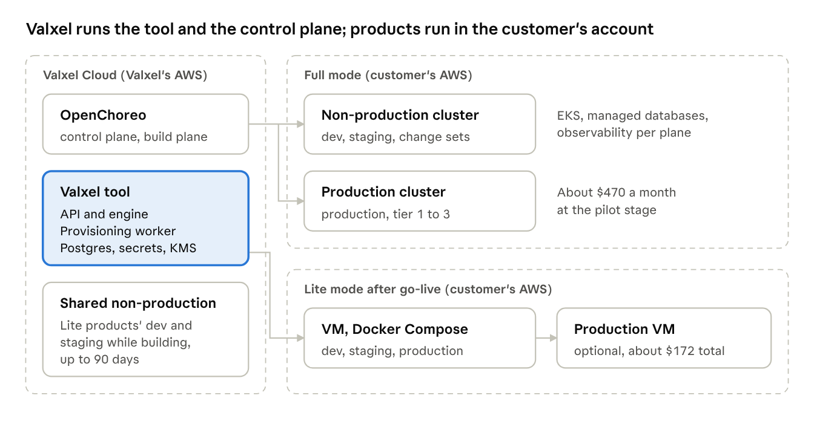

Purpose and scope
Valxel SDLC is an agentic software development lifecycle. It takes a product from a vision to a roadmap, takes each feature from an idea to production, and handles production incidents. Agents do the work, and people decide at gates. The goal is that people spend about 15% of the effort and agents 85%.
This page describes the tool as built in valxel-platform/agentic-sdlc. The README has the detail for each part.
Who uses it
- Founders and product owners describe a product or a feature, and approve the brief, the roadmap, the spec (G0–G2) and production goals.
- Designers and architects approve the design (G3) and the architecture (G4), or take a phase over.
- Engineers and security reviewers approve high-risk changes (G5) and see what agents built.
- Release managers approve production and the rollout plan (G6).
- On-call is paged only when the tool can't resolve an incident itself.
Design principles
- Agents work, people decide. Gates G0–G6 wait for approvers named in the product's governance repo. Three failed evaluator loops, or a spent budget, hand a phase to a person.
- Products own their rules. The tool keeps no product settings. It reads each product's governance repo and pins it by commit for the life of a feature. Products can tighten the platform's rules, never loosen them.
- Production stays human. Promotion is a person's decision at G6. The tool may act alone only to turn off a recent flag or roll back a recent release, when the policy allows it and the analysis agrees.
- The data class picks the model. The model gateway routes health and payments work only to providers covered for it.
- Every integration is an interface. Each outside system has an offline stand-in, so the whole pipeline runs deterministically in tests, and live mode swaps in real systems one at a time.
- Everything leaves a record: decisions, production changes, model calls, cost and traces, for audit and for learning.
System context

People reach the tool only through its web app (and the API behind it). The tool reaches everything else through an interface per system:
- GitHub: product code, pull requests and CI, plus each org's governance repo, read through a GitHub App. Webhooks tell the tool when CI finishes or a pull request changes.
- OpenChoreo, the internal developer platform: it builds images, deploys them to each product's environments, and runs the observability plane. Production signals come back from it and from error tracking.
- AWS: each product's infrastructure (EKS clusters, managed databases), plus the tool's own KMS keys, Secrets Manager and budget alerts.
- Model providers, only through the tool's model gateway, which applies the data-class rules.
- Operations and work tools: feature flags (Flipt), paging (PagerDuty), change records (ServiceNow), error tracking (Sentry or GlitchTip), work tracking (Jira or OpenProject) and diagrams (Lucid or draw.io).
Architecture

The tool is one Python service and one Postgres database, plus a small provisioning worker. Every workflow is a LangGraph graph. Each step is checkpointed in Postgres, so a feature can wait days at a gate, or on CI or a deploy, and resume after a restart. Several replicas can run side by side: an advisory lock per thread keeps one replica on a feature at a time, an elected watcher checks external waits, and live updates go through Postgres NOTIFY.
The provisioning worker is the same image run as valxel provisioner, in its own process with its own AWS role. It is the only process that can sign for the GitHub App with administration rights.
How a request moves through it: a person acts in the web app; the API records the decision and resumes the waiting graph; the graph runs agents through the gateway and acts through the integrations. When it has to wait (for a person, CI, a deploy or the worker), it checkpoints and stops. Webhooks and the waits watcher wake it again.
Product inception: from a vision to a set-up product
A new product starts as an inception thread (INCEPTION-PRD-<n>). Both of its gates belong to the product council, named in the registry (inception.council). The product doesn't exist in the registry until setup's pull requests merge.
- Research. It runs once and covers the market, competitors and users. The brief cites it, and the brief gate shows it.
- Brief. Agents draft the product brief: id, org, users, goals with measures, data class, budget and capacity tier.
- Brief gate. The council approves, sends the brief back with feedback, or drops it.
- Plan. Agents draft the architecture, then the roadmap. The architecture includes the deployment diagram, the flows as sequence diagrams, and a capacity and cost plan per stage; its diagrams are published to Lucid or draw.io for reviewers. The roadmap sets goals, initiatives and releases.
- Product gate. The council approves the architecture and roadmap together, sends them back, or drops the product.
- Setup, each step recorded and safe to repeat:
- Governance repo: created through the provisioning worker. Its pull request carries
product.yaml, the constitution, context, goals, initiatives and the capacity plan. - Registry: a pull request adds the product to
config/registry.yamlin the config repo. - Environments, full mode: a pull request for the product's two clusters, then its OpenChoreo project, environments and pipeline once both data planes register.
- Environments, lite mode: a project with dev and staging on Valxel's shared non-production plane. No clusters, and no production until go-live.
- Approver teams: listed for an org admin to create.
- Governance repo: created through the provisioning worker. Its pull request carries
From then on, the product's governance repo is the source of truth. Features start from the roadmap's initiatives (G0) or from the intake chat.
Feature lifecycle

One feature is one thread, across every repo it touches. Each phase is a subgraph: an agent produces, deterministic checks run, then a critic in a fresh context scores the work against a checklist, and the phase loops until it passes or escalates.
| Gate | Who decides | What they approve |
|---|---|---|
| G0 | Product owners | An initiative from the roadmap becomes a feature |
| G1 | Product owners | Discovery: the problem, users and measure |
| G2 | Product owners | The spec and acceptance criteria |
| G3 | Designers | The design (decided as a pair with G4) |
| G4 | Architects | The architecture, new repos and resources |
| G5 | Engineers, security | High-risk or regulated changes only |
| G6 | Release managers | Production and the rollout plan |
At each gate a person can approve, send it back with feedback, take the phase over (their version becomes the document), or stop the feature. Every decision records who, when and how many active minutes, which is how the tool measures the 15% human share. For small, low-risk changes, the express profile skips discovery and UX design: G4 approves the spec with the architecture, while architecture, G5 for risky changes and G6 always stay. Products opt in, and express never applies to health or payments products.
After G4, the provision step creates any new repos through the provisioning worker. The planner splits work into tasks, with one coder agent per task and one reviewer per pull request. Failures in CI, the build, dev or staging go back to the coders of the repos they point at. The merge train merges libraries first, then providers, then consumers. OpenChoreo deploys to dev and staging, and after G6 the flag steps through 5, 25, 50 and 100%. It holds on nearby incidents, and stops if users with the flag on fail more than users without it.
Components
All paths are under src/valxel_sdlc/.
| Component | Where | Responsibility |
|---|---|---|
| Web app and API | web/ (React), api/app.py (FastAPI) | Decisions, features, intake chat, roadmap; sign-in; GitHub, Sentry and production-signal webhooks; live updates over server-sent events |
| Sign-in | web/auth.py | GitHub OAuth; signed sessions; matching people to the approver teams in each product's governance |
| Engine | engine.py, waits.py, cluster.py | Starts features, lists the inbox, applies decisions; resumes threads when CI, builds, deploys or the worker finish; one replica per thread |
| Feature pipeline | graph/pipeline.py, graph/phase.py | Phases, gates and escalations; parallel design and architecture; build fan-out; merge train; release and rollout |
| Inception | inception/ | Research, brief, architecture and roadmap, the two council gates, and product setup |
| Roadmap | roadmap/ | Goals, initiatives (G0) and releases |
| Agents | agents/, runtime/, sandbox.py | Roles and plugin skills per phase; Claude Code and Codex sessions in a sandbox (environment allowlist, network allowlist, no hooks); one coder per task |
| Evaluators | evaluators/ | Deterministic checks first, then a checklist critic in a fresh context, with its quotes checked against the document |
| Model gateway | gateway/ | Role-to-model registry, data-class allowlist, cache-first prompt layout, usage ledger |
| Governance | governance/ | Reads each product's governance repo and the platform's, validates product.yaml, pins both by commit per feature |
| Provisioning | provisioning.py, provision_queue.py | New repos from templates with the platform's standards; the queue and the provisioning worker's checks |
| Delivery | integrations/github.py, integrations/openchoreo.py, lite/ | Pull requests, CI and merges; builds, environments, promotion and rollback through OpenChoreo, or through Docker Compose on a VM in lite mode |
| Operations | ops/ | Production signals, incidents, correlation with recent changes, remediation policy, paging, ServiceNow, change log, resource inventory |
| Cost | finops/, gateway/ledger.py | Model spend per feature and phase; production cost per feature from FinOps |
| Knowledge | knowledge/, duplicates.py | The architecture record, API contracts, design checks, and finding requests the product already has |
| Quality | quality/, performance.py, acceptance.py | Test and security suites and their floors per data class; performance budgets; acceptance tests across repos |
| Secrets and signing | secret_ring.py, signing.py, strict.py | Secret stores, key rings for rotation, KMS signing for the GitHub Apps, and refusing an unsafe production start |
Data and state
The tool keeps as little as it can, and nothing that belongs to a product. Products' rules, plans and records live in their own Git repos; the tool's database holds what it needs to run and to account for its work.
| Data | Where | Kept for |
|---|---|---|
| Workflow state: every feature, inception and incident thread, step by step | Postgres (LangGraph checkpoints) | Resuming after restarts; the feature's history |
| Gate decisions: who, when, active minutes, feedback | In the thread state | Audit; measuring the human share |
| Usage ledger: one row per model call (role, model, tokens, cache, cost) | Postgres | Cost per feature and phase; cache-hit rate |
| Change log: every production change, hash-chained | Postgres, plus a ServiceNow receipt where used | Change management; looking back after incidents |
| Capability catalog, lessons, intake chats, provisioning queue | Postgres | Reuse, learning from corrections, the worker's queue |
Product governance: product.yaml, constitution, goals, initiatives, capacity, ADRs, postmortems | Each product's governance repo | The product's own rules; pinned per feature by commit |
| Platform rules: constitutions, templates, quality floors, model routing | The tools org's config repos | Rules every product inherits |
| Documents agents write (PRD, design, HLD, plans) | Artifacts, linked from the thread; ADRs and records go to Git | Review at gates; the product's knowledge |
| Lite mode runtime state | A file per product today; Postgres before outside customers | What runs on each VM |
| Secrets | Secret store (AWS Secrets Manager or mounted files); App keys in KMS | Never in the database or the code |
Events into the tool: GitHub webhooks (CI, pull requests), production signals (Alertmanager, error tracking, tickets, AWS alarms and budgets) and people's decisions. Events out: pull requests and merges, deploys, flag changes, pages, change records and live updates to the web app.
Products themselves follow constitution VX-16: they change state Kafka first, and event workers keep each data store from those events, so any store can be rebuilt by replaying its topics.
Runtime and deployment

Valxel Cloud runs the tool (API process, provisioning worker, Postgres, secrets and KMS keys), OpenChoreo's control and build planes, and a shared non-production plane. Customers' products run in the customer's own AWS account, in one of two modes, set per product in product.yaml (runtime.mode):
- Full mode: two EKS clusters per product, registered with OpenChoreo as data planes: non-production (dev, staging, change-set environments) and production. Managed databases come from the platform's AWS catalog. Each product picks a capacity tier from 1 to 3; every product's pilot stage is held to tier 3 (99.5%, 4-hour recovery, at most a day of lost data).
- Lite mode: for small customers at the pilot stage. While the product is built, Valxel hosts its dev and staging on the shared plane, for up to 90 days (then go live, pay about $79 a month to extend, or pause). At go-live, a person moves everything to the customer's VM, with the same images and nothing rebuilt. The tool then deploys there as Docker Compose projects over SSH, through
ComposeRuntime, which implements the same interface as OpenChoreo. Production can have a VM of its own.
Self-hosted: organizations under 250 people and $10M revenue may run the tool themselves for free (BUSL 1.1 with an additional use grant; Apache 2.0 after three years). The same image runs there, with secrets from mounted files or Vault instead of AWS.
Modes of the tool itself: live, where every integration reaches its real system, and offline (stub), deterministic for evaluation and tests. VALXEL_STRICT=1 refuses to start in production while anything would quietly fall back to a stand-in or an unsafe setting.
Pilot-stage cost estimates: about $470 a month for full mode, $115 for one lite VM, $172 with production on its own VM.
Governance, change management and FinOps
Governance as code
- The platform's constitution (VX articles, such as VX-3 for human production, VX-7 for data-class routing, VX-16 for Kafka-first products and VX-17 for who may call whom) applies to every product.
- Each product's governance repo adds its own constitution and
product.yaml: repos, approver teams, budget, thresholds, high-risk paths, runtime, dependencies on shared services and workflow profiles. A product may tighten the platform's rules, never loosen them. - Pinning: a feature pins both by commit when it starts, so a rule change mid-flight can't change what was approved.
- Lessons: proposed as governance pull requests; once merged, pinned into prompts and the critic's checklist.
Change management
Every production change is recorded with what changed, who or what made it (a person at G6, or the tool under the remediation policy) and why. The record is hash-chained in the change log and gets a ServiceNow receipt where the product uses ServiceNow. Incidents correlate with recent changes, and look-backs read the same log.
Incidents
- Investigation: production signals join an open incident or open one; OpenChoreo's root-cause agent investigates while the tool correlates recent changes.
- Mitigation: when the policy allows and the analysis agrees, the tool turns off a recent flag or rolls back a recent release, and records it.
- Paging: on-call is paged urgently only if the tool can't act, its action fails, or the failure continues.
- Afterwards: the fix returns through the pipeline as a hotfix, and the postmortem is drafted into the governance repo.
FinOps
- Building cost: the usage ledger prices every model call by role, phase and feature, with cache hits.
- Running cost: OpenChoreo's FinOps data and AWS Cost Explorer give each feature's production cost, in a FOCUS-format ledger beside its build cost.
- Budgets: budgets per product stop agents when spent (an escalation), and AWS Budgets alerts arrive as production signals.
- Lite mode: the VM's price shared across environments and features by container CPU time (planned).
Security architecture
| Concern | Design |
|---|---|
| People | GitHub sign-in; signed session cookies; approval rights come from the teams each product's governance names; production and go-live need a person (VX-3) |
| Agents | Each session runs with an environment allowlist, a network allowlist, hooks off and no package install scripts; a coder gets a GitHub token for its one repo, contents: write only, for at most an hour; documents and requests reach agents as marked untrusted content |
| GitHub | Two Apps: Delivery (no administration) for the API process, Provisioning (administration) for the provisioning worker only; each App's key stays in KMS, and each key's policy names the one role that may sign |
| Secrets | One secret store (AWS Secrets Manager in Valxel Cloud; mounted files or Vault when self-hosted), scoped per product; key rings so every secret rotates without downtime; strict mode refuses published, weak or environment-held secrets |
| Data | The gateway routes health and payments work only to model providers covered for it (VX-7); products' services reach only what they declare (VX-17) |
| Webhooks | HMAC or bearer checks in constant time, accepting the current and previous secret during a rotation |
| Supply chain | Base images pinned by digest, Python packages by hash; product builds scanned, signed, with SBOMs and provenance; images deployed by digest |
| Audit | Gate decisions, the hash-chained change log, the usage ledger and agent traces |
Rotation: 15 of the 22 secret kinds can rotate with no person involved, as pre-approved standard changes. A person steps in only where a provider's web console is the only way to make a key, for emergencies, and for a quarterly review: about 5% of the work.
Still open before outside customers: lite mode's secrets and per-VM SSH keys, keeping real model keys out of agent sessions, per-product signal tokens and replay protection, re-checking approvers at G4–G6, rate limits and security headers, and an outside penetration test.
Quality attributes, constraints and open items
| Attribute | How the design meets it |
|---|---|
| Durability | Every workflow step is checkpointed in Postgres; threads wait days for people, CI or deploys and resume after restarts |
| Scale | Stateless replicas behind a load balancer; an advisory lock per thread, an elected watcher for external waits, live updates over Postgres NOTIFY; coder agents fan out per task |
| Testability | Every integration has an offline stand-in, so the whole pipeline runs deterministically in tests; evals replay past documents against a changed model, prompt or plugin pin, and a canary tries a config on some features first |
| Cost control | A cache-first prompt layout, model routing per role, budgets per product that hand work to a person when spent, and lite mode for small customers |
| Portability | Interfaces for the runtime (OpenChoreo or Docker Compose), the secret store (AWS, files or env) and signing (KMS or a key); several model vendors |
| Human share | Active minutes recorded at every decision; the pilot report measures it against the 15% goal |
Constraints: Python and LangGraph for the service, React for the web app, Postgres as the only database, GitHub for code and governance, OpenChoreo on AWS EKS for products in full mode, and AWS for lite VMs (for now).
Open items
- The end-to-end demo on real AWS and OpenChoreo comes before investor pitches; if cloud access keeps blocking it, the demo runs in lite mode.
- Lite mode, remaining parts: resources, the installer, the 90-day cap, cost sharing, design checks and monitoring on the VM.
- Security: the remaining items above, then the rotation agent.
- Admin page: approvers are configured through governance files today.